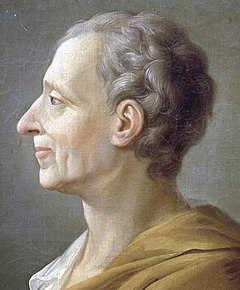
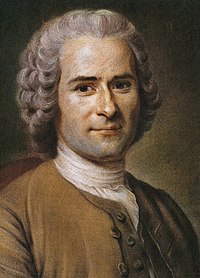

Voltaire

François Marie Arouet, mais conhecido pelo pseudônimo Voltaire, nasceu
em Paris, no dia 21 de novembro de 1694. Descendente de família
aristocrática, Voltaire recebeu uma boa educação, sendo um aluno muito
aplicado. Estudou línguas (latim e grego), dialética e teologia, no
colégio jesuíta "Collège Louis-le-Grand", em Paris. Junto à Rousseau
(1712-1778) e Montesquieu (1689-1755), Voltaire foi um dos mais
importantes pensadores do Iluminismo Francês, movimento cultural e
intelectual da elite europeia do século XVIII que se pautava na razão.
Voltaire era defensor da ciência, do progresso, ao mesmo tempo que
tolerava a diferença e defendia, sobretudo, a liberdade de expressão.
Chegou a combater o absolutismo e criticar a aristocracia e o poder da
Igreja Católica. Segundo ele
“A primeira lei da natureza é a tolerância; já que temos todos uma
porção de erros e fraquezas.”
leia mais...
Montesquieu
Charles-Louis de Secondat, mais conhecido por Barão de Montesquieu ou simplesmente Montesquieu, foi um filósofo, escritor e político iluminista francês. Viveu o glorioso século XVIII, tido como período de grande crescimento intelectual europeu, sobretudo francês, em razão da ascensão do movimento iluminista. Montesquieu foi um dos principais intelectuais iluministas a sustentar teoricamente a Revolução Francesa, que aconteceria em 1789, 34 anos após a sua morte. A principal contribuição do filósofo para a filosofia política que fundamentou a revolução e para toda a organização política posterior foi a ideia de tripartição dos poderes do Estado.
“Liberdade é o direito de fazer tudo o que as leis permitem.”Leia mais...
Rousseau

Jean-Jacques Rousseau não é francês, como muitos pensam.
Ele é suíço, nascido na cidade de Genebra, em 28 de junho de 1712.
Sua mãe, Suzanne Bernard, morreu com o filho ainda pequeno. Ela deixou para Rousseau uma vasta biblioteca, que foi usada por Isaac, seu pai, para fornecer a primeira educação do menino.
Isaac educou seu filho por meio da biblioteca de Suzanne até que o menino completasse sete anos de idade.
Além dessa biblioteca, eles leram a biblioteca herdada do avô materno de Rousseau.
Seu pai teve um problema, envolvendo-se em uma briga com um oficial da lei.
Ele não conseguiu provar sua inocência, cumpriu pena e exilou-se de Genebra.
Rousseau nunca mais o viu, ficando aos cuidados do tio materno, Bernard.
Seu tio o enviou para a França a fim de estudar com o pastor Lambercier.
O povo, por ele próprio, quer sempre o bem, mas, por ele próprio, nem sempre o conhece.
leia mais...